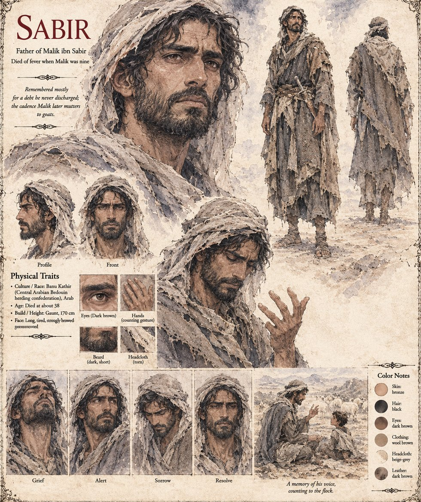

Sabir
Father of Malik ibn Sabir, Banu Kathir · named only by patronymic · died of a fever when Malik was nine · late thirties at death by the sheet
The father of Malik, known to the manuscript only through the patronymic in his son's name. He dies of a fever when Malik is nine, one no physician came far enough into the waste to treat, and the threadbare tent he dies in is the one Malik still owns on the night the story opens. He is remembered, the manuscript says, mostly for a debt he never discharged, and for the cadence in which he counted it: the verse Malik later mutters to his goats at dusk keeps that same debt-counting rhythm, so that even his son's poetry keeps a kind of ledger. Malik hands the cadence on in turn, without ever saying why, to three children of his own.
The sheet draws him gaunt and long-faced, with a tired, strongly browed face, black hair, a short dark beard, dark eyes and bronzed skin, in patched wool and a torn headcloth, with a herding-knife at his belt; it gives him a habit of counting on his fingers while he talks, and one panel shows the counting hand. Its expression panels run grief, alertness, sorrow and resolve, and its last scene is captioned a memory of his voice, counting to the flock. The manuscript gives only the name, the fever, the debt and the cadence; the age of about thirty-eight at death, the finger-counting and everything visual are the sheet's.